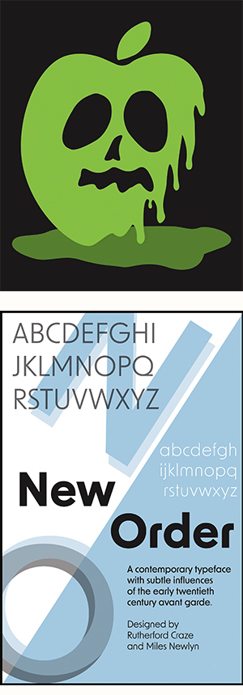
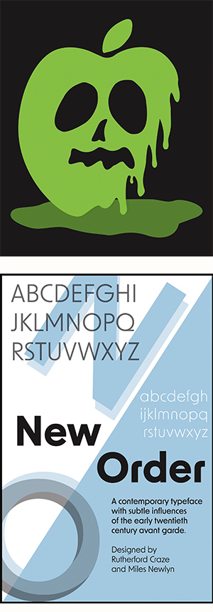

Skills
- Python | HTML / CSS
- Adobe: Photoshop | Illustrator | XD | Lightroom
- Certified Solidworks Associate (Mechanical Design)
- -
- Check out my Github Repo!
About me.
I am a Creative Technology and Design major at University of Colorado Boulder. I am constantly inspired by the world around me and use that to creatively approach any problem. I am passionate about designing products that can leave a positive impact on both people and the environment.
My current studies focus on graphic design, creative coding, and product development. I also have past experience in mechanical engineering, and love to combining those elements of prototyping and manufacturing with my own artistic twist.
 
